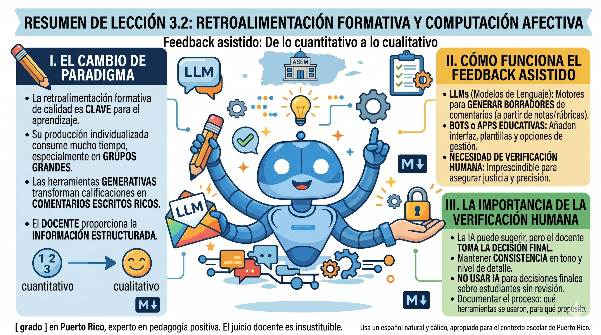
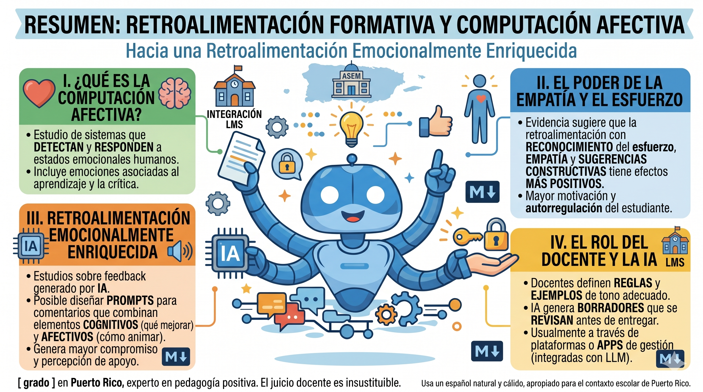

Retroalimentación formativa y computación afectiva
Feedback asistido: De lo cuantitativo a lo cualitativo

La retroalimentación formativa de calidad es uno de los factores con mayor impacto en el aprendizaje, pero su producción individualizada consume mucho tiempo, especialmente en grupos grandes. Las herramientas generativas pueden transformar calificaciones o descriptores de desempeño en comentarios escritos más ricos, específicos y orientados a la mejora, siempre que el docente proporcione información estructurada sobre el desempeño y revise cuidadosamente la salida (Kwak, 2025). Estudios recientes muestran que sistemas de evaluación automatizada combinados con generación de comentarios pueden ofrecer retroalimentación más rápida y consistente, mientras se mantiene la necesidad de verificación humana para asegurar justicia y precisión (Yan et al., 2020). En este contexto, los LLM funcionan como motores de generación de borradores de comentarios a partir de calificaciones, rúbricas o descriptores de desempeño, mientras que los bots o apps educativas que integran LLM añaden capas de interfaz, plantillas y opciones de gestión de grupos, sin sustituir el juicio profesional docente.
Retroalimentación emocionalmente enriquecida

La computación afectiva estudia cómo los sistemas pueden detectar, modelar o responder a estados emocionales humanos, incluyendo emociones asociadas al proceso de aprender y recibir crítica. Un cuerpo de evidencia sugiere que la retroalimentación que incorpora reconocimiento del esfuerzo, empatía y sugerencias constructivas tiene efectos más positivos en la motivación y la autorregulación del estudiante que comentarios puramente correctivos (D’Mello & Kory, 2015).
Investigaciones recientes sobre retroalimentación “emocionalmente enriquecida” generada por IA indican que es posible diseñar prompts y sistemas que produzcan comentarios que combinan elementos cognitivos (qué mejorar) y afectivos (cómo animar y sostener al estudiante), generando mayor compromiso y mejor percepción de apoyo por parte del estudiantado (Alsaiari et al., 2024). En estos estudios, los docentes definen reglas y ejemplos de tono adecuado, y la IA genera borradores de comentarios que luego se revisan antes de ser entregados, usualmente a través de plataformas o apps de gestión del curso que consumen servicios LLM en segundo plano.
En la práctica, esto implica:
- 1. Confirmación: Reconocer lo que el estudiante hizo bien. Instruir al modelo para reconocer logros específicos antes de señalar errores.
- 2. Empatía: Reconocer el esfuerzo y validar el proceso de aprendizaje. Pedirle que utilice un tono respetuoso y motivador, adecuado a la edad y contexto cultural.
- 3. Especificidad: Señalar exactamente qué necesita mejora y por qué.
- 4. Orientación a la acción: Proporcionar pasos concretos para mejorar. Solicitar sugerencias concretas de próximos pasos (“qué hacer mañana”) en lugar de comentarios vagos.
Ejemplo de prompt para generar feedback:
Rol: Actúa como un Maestro Mentor de [ grado ] en Puerto Rico, experto en
pedagogía positiva y enseñanza de [ materia ] a [nivel ]. Tu tono debe ser alentador, cercano y
motivador, similar al de un guía que celebra el esfuerzo mientras corrige el camino.
Contexto del estudiante:
• Nivel: 4to Grado (9-10 años).
• Desempeño: Obtuvo 65/100 en un examen de fracciones.
• Logros: Dominó correctamente las sumas de fracciones.
• Desafíos: Confusión entre numerador/denominador, falta de simplificación y errores en las
restas.
Tarea: Redacta un comentario de retroalimentación de 4 a 5 oraciones dirigido
directamente al estudiante. Debes seguir esta estructura de salida estructurada:
1. Validación positiva: Comienza felicitándolo por su excelente trabajo en las sumas.
2. Claridad empática: Explica los errores (numerador/denominador y restas) de forma sencilla,
tratándolos como "oportunidades de aprendizaje" y no como fallos.
3. Acción concreta: Sugiere un paso práctico (ej. una estrategia de dibujo o una regla
mnemotécnica para no olvidar simplificar).
4. Cierre motivador: Termina con una frase que refuerce su potencial para mejorar en el próximo
reto.
Restricciones de estilo:
• NO menciones la nota numérica (65/100).
• NO uses lenguaje condescendiente ni demasiado técnico.
• Usa un español natural y cálido, apropiado para el contexto escolar de Puerto Rico.
Ahorro de tiempo y aumento de calidad:
La generación asistida de retroalimentación permite al docente:
- Mantener consistencia en el tono y nivel de detalle.
- Personalizar comentarios masivamente en menos tiempo, especialmente cuando se usan bots o módulos de retroalimentación incrustados en el LMS que llaman a un LLM.
- Enfocarse en casos que requieren atención especializada.
Análisis de errores y patrones de confusión
Además de redactar comentarios, los LLMs pueden analizar conjuntos de respuestas anonimizadas para identificar patrones de error, concepciones alternativas o dificultades recurrentes. La literatura sobre evaluación asistida por IA muestra que estos sistemas pueden apoyar el diagnóstico de errores frecuentes y la clasificación de respuestas según criterios de rúbricas, lo que sirve de base para planificar re-enseñanza más focalizada (Yan et al., 2020). En muchos casos, esta funcionalidad no se accede directamente al modelo base, sino a través de herramientas de analítica de aprendizaje que integran LLM para procesar texto.
En términos operativos, el flujo típico consiste en:
- Anonimizar completamente las respuestas: Eliminar nombres, números de estudiante, cualquier información identificable.
- Compilar respuestas por pregunta o tarea: Agrupar las respuestas a una misma pregunta.
- Solicitar al LLM análisis de patrones: Pedir que identifique los errores más frecuentes, las concepciones erróneas subyacentes y posibles causas.
- Generar estrategias de re-enseñanza: Basándose en los patrones identificados, solicitar sugerencias de actividades correctivas.
Este uso mantiene al maestro como intérprete principal del significado pedagógico de los datos, mientras la IA facilita el procesamiento inicial de grandes volúmenes de información sobre el desempeño estudiantil.
Ejemplo de prompt para análisis de errores:
Rol: Actúa como un Especialista en Diagnóstico Pedagógico y Curriculista de
[materia] del DEPR. Tu especialidad es el análisis de "misconceptions" (conceptos erróneos) y el
diseño de estrategias de remediación de bajo costo y alto impacto para el salón de clases en
Puerto Rico.
Contexto:
• Nivel: 6to grado de ciencias (11-12 años).
• Materia: Astronomía / Ciclo Lunar.
• Insumo: 25 respuestas anónimas de estudiantes a la pregunta: "¿Por qué la luna cambia de forma
durante el mes?".
• Datos: [Pega aquí las 25 respuestas].
Tarea: Realiza un análisis exhaustivo de estas respuestas para informar mi
instrucción futura, cubriendo los siguientes puntos:
1. Identificación de conceptos erróneos: Clasifica y describe los 3 patrones de error más
frecuentes (ej. "la sombra de la Tierra causa las fases", "las nubes tapan la luna", etc.).
2. Análisis de causa raíz: Explica por qué pueden estar ocurriendo estas confusiones,
considerando el uso del vocabulario, ideas previas comunes en esta edad o posibles fallos en la
instrucción tradicional.
3. Plan de remediación (Estrategias viables): Diseña una actividad de remediación para cada
error identificado. Las actividades deben ser:
o Alineadas a 6to grado.
o Bajo costo/Recursos limitados: Utilizando materiales accesibles en una escuela
pública de PR (ej. linternas de celulares, pelotas de papel, luz solar).
o Aprendizaje activo: Que el estudiante sea quien descubra el concepto correcto a
través de la observación o modelaje físico.
Formato de salida: Presenta el informe utilizando "La Lupa del Maestro" como
marco de referencia: asegura que las sugerencias sean fácticamente correctas, viables y
culturalmente pertinentes para Puerto Rico.
Cierre de la lección
Felicidades
Has culminado la lección 3.2 del programa de formación profesional. Al completar el contenido 3.2, ampliaste tu visión sobre la retroalimentación: ahora sabes que los LLM pueden ayudarte a pasar de comentarios escuetos y solo correctivos a mensajes más claros, específicos y emocionalmente cuidadosos, sin perder tu voz profesional. Este marco te permite aprovechar la IA para ganar tiempo y consistencia en el feedback, manteniendo siempre tu rol como quien decide el tono, el foco y el tipo de apoyo que cada estudiante necesita.
Invitación al checkpoint de saberes
Para cerrar este bloque, te invitamos a realizar el Checkpoint de Saberes 3.2, una evaluación formativa breve y no punitiva centrada en el uso de LLM para generar retroalimentación formativa (cognitiva y afectiva) y para analizar patrones de error de forma anonimizada, manteniendo siempre tu papel como filtro ético y pedagógico de lo que se comunica al estudiante. Al completarlo, estarás generando evidencia de tu propio criterio profesional en torno al uso de la IA para mejorar la calidad, el tono y el enfoque de la retroalimentación, mostrando cómo decides cuándo aceptar, adaptar o descartar lo que propone el modelo para que el feedback apoye de verdad el aprendizaje y el bienestar de tu estudiantado.
Referencias
Alsaiari, O., Baghaei, N., Lahza, H., Lodge, J., Boden, M., & Khosravi, H. (2024). Emotionally enriched feedback via generative AI. arXiv preprint arXiv:2410.15077.
D'mello, S. K., & Kory, J. (2015). A review and meta-analysis of multimodal affect detection systems. ACM computing surveys (CSUR), 47(3), 1-36.
Kwak, M. (2025). The Effectiveness of AI-Driven Tools in Improving Student Learning Outcomes Compared to Traditional Methods. Issues in Information Systems, 26(4), 233-247.
Yan, D., Rupp, A. A., & Foltz, P. W. (Eds.). (2020). Handbook of automated scoring: Theory into practice. CRC Press.